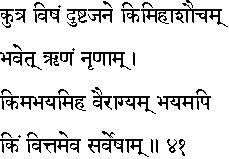
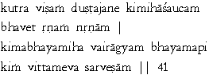

|

|
Verse 41 - Meaning:
Q: Where (kutra) is the receptacle of poison (visham) ?
A: In the mind of evil men. (dushta-jane)
Q:What (kim) gives (bhavet) that kind of impurity-consciousness (asaucam) which makes one avoid others ?
A: The state of indebtedness. (rnam-nrnaam)
Q:What (kim) makes a man fearless ? (abhayam)
A: The state of non-attachment.(vairaagyam)
Q:What (kim) is the cause of fear (bhayam-api) ?
A: It is wealth (vittam), indeed.
|